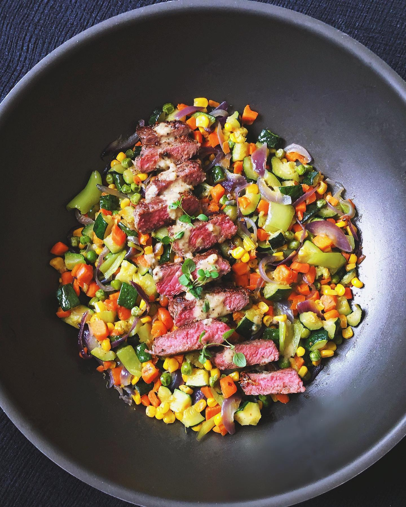

Horčicová omáčka podľa @mrskamlsna — Normy Jedál
Grilovaná zelenina s rib eye steakom a horčicovou omáčkou. 👌🏻 Ako pripraviť steak som už rozoberala v predošlom článku a ako na horčicovú omáčku Vám prezradím teraz. 🙂
Čo budeme potrbovať:
3 PL brandy
150 ml vývaru
2 PL hrubozrnnej horčice
1 PL masla
100 ml smotany na šlahanie
Do panvice s výpekom z mäsa pridajte brandy, vývar, smotanu a horčicu. Nechajte povariť pár minút a potom panvicu odstavte. Pridajte maslo a nechajte ho rozpustiť. Hotovo! Rýchle, však? 🙂
#steak#ribeyesteak#vegetables#zelenina#horcicovaomacka#mustardsauce#milujemvarenie#jedlo#kuchar#ilovecooking#fresh#cook#cooking#cooker#varenie#lunch#obed#instafood#foodporn#dailyfood#dailyphoto#photooftheday#recipe#instaphoto#delicious#tasty#slovakia#slovensko#foodporn#foodblogger